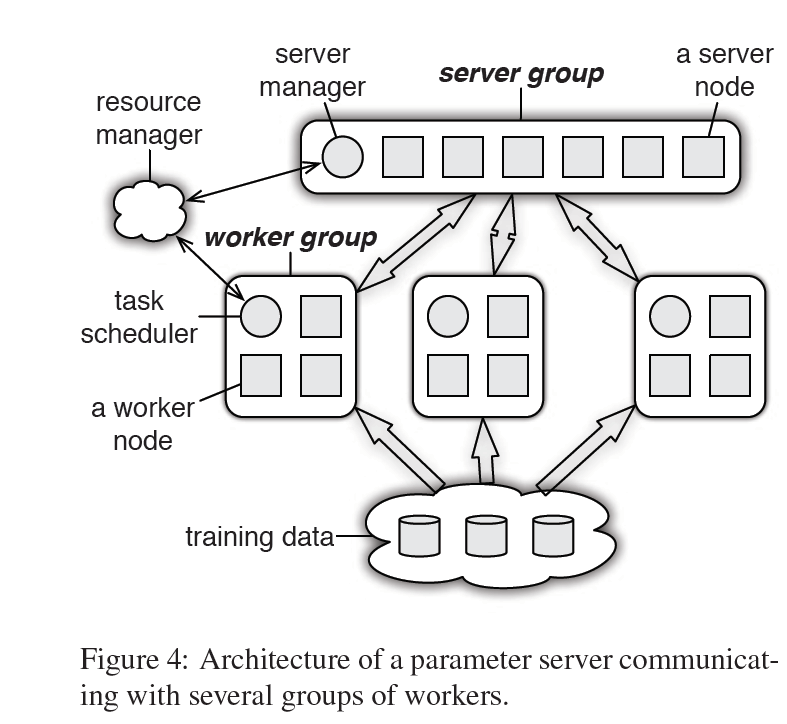
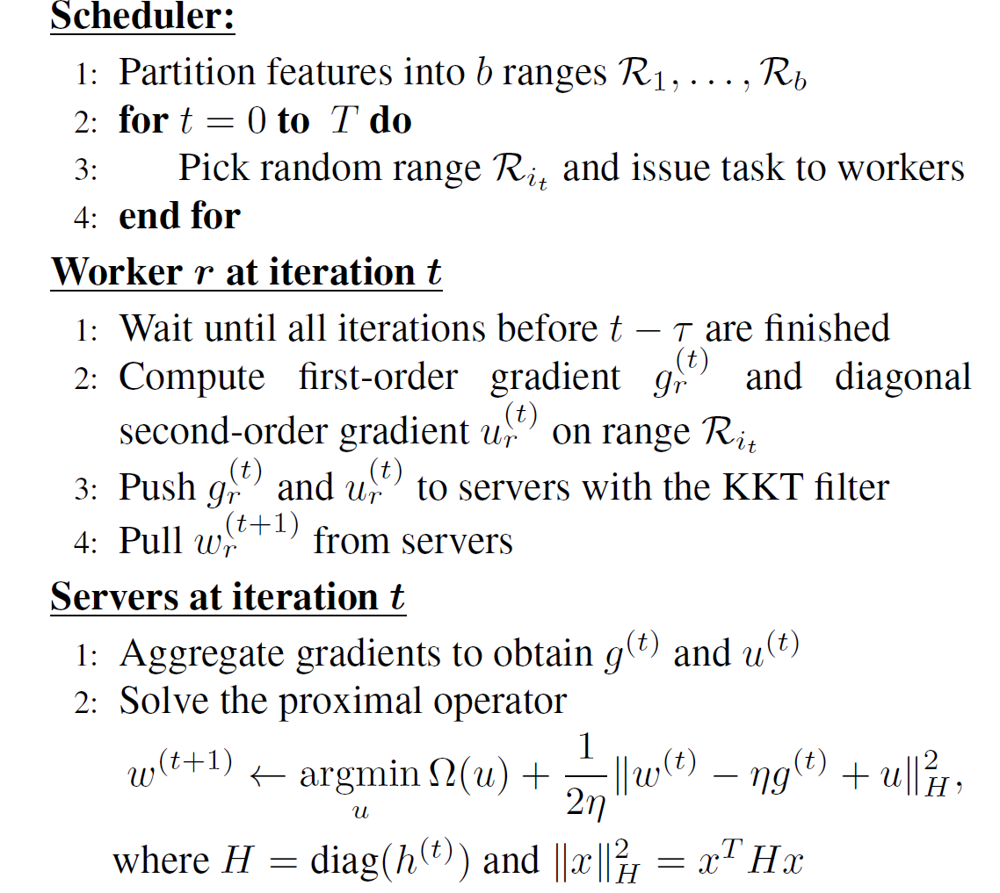

这篇论文是发表在OSDI 2014， 可以算是分布式机器学习的一个里程碑意义的论文。虽然提出的思想在如今看来已经不再那么新颖，但是具体实现细节以及对big data的处理能力的提升使得该模型成为经典模型。
它并不是第一个提出parameter server思想的文章， 用文中的话就是：第一代的memcached distributed(key,value) store作为同步机制的ps缺乏flexibility and good performance， 第二代ps如YahooLDA，Distbelief中添加了大量人为指定的算法和元素，并没有很好地解决数据一致性以及scalability的问题。
本文提出的模型以及算法很大程度上在数据一致性上提高了弹性，是至此之前唯一的提供持续的容错的系统。因为文章的细节实现太多，关于数据如何切割如何备份如何传输步骤都很详细，这里也没什么功夫一一列举了，说实话也不怎么记得住就是了。所以以下将从三个方面概括一下主要的思想：模型、算法、容错处理。
I. Model

如图，一个worker group负责运行一个application，其中的task scheduler负责创建task分配给每一个worker node，同时还进行容错控制，如果加入或删除worker node， 它会对未执行完的task重新进行调度。server group中则是存储了所有的global parameter，每一个 server node存储一部分， server node间互相通信备份或者迁移数据提高稳定性以及scaling的能力。server manager的用途则是对每一个server node进行长期的监控(如健康状况等)以及parameter partitions的分配。
举例来说，对于一个训练集庞大的DNN, 我们把数据进行拆分放到每一个worker node上，每一个worker会利用自身存储的数据求梯度，然后每一个worker node会和server进行通信。那么如此多的sever，我们如何得到哪一个server里面存放着我们这个DNN所需要的parameters的数据呢? 对于同一个模型，处理它多个node的梯度运算的server 是固定的一个还是多个， 如果是分成多个，那么这多个server node之间是怎么关联的呢？并没有再上一层为这些server node再进行一次aggregation。
要搞清楚通信过程，首先先了解参数在传输过程中是以什么形式存储的。传统模型下在传输过程中模型都是以（key,value）的形式存储的，例如对于一个LR过程，key就是输入的一个特征，value则是该特征对应的权值。试想，这样对于一个参数我们push到server端，要进行聚合运算，一定是在一个server node上进行的。而对于同一个模型下的多个参数来说，则可以是在不同的node上的。所以我们要明白的一点就是：在传输的过程中，处理的原子是一个个的（key,value)，即一个个参数。其次，对于如何得知是在哪个server node上运行的， 本文采用的是持续性hash的思想， server master management采用的是direct-mapped DHT design. 实现key与server node之间的一一对应。关于Consistent Hashing的原理这里不再赘诉。server master端控制hash ring 的management，其他的server nodes本地存储key partition。
1 | 提一个问题：这样server master会造成瓶颈吧？ 毕竟每一次push和pull都需要经过server master的寻址，还是说这个地址会被记住？文章中好像没说，那如果在第一次push之后记住，server node发生变化后新的参数就得不到进行处理了。 |
本文主要针对scalability作出改进，那么试想在每轮参数更新的时候定是需要更新大量的参数。带宽和内存资源会不够。所以提出range-based communication pattern of ps. 如果ps push的是一个范围，那么这些参数的时间戳是可以看成是相同的。对于每个node上的参数range的范围界定，文中给出一个简单的算法，其中range最大值为3。最后实现了O(mn)到O(mk)的算法提高，m是node个数，n是参数个数，k是range个数。
## II. Algorithm
文章对三个算法进行了评估，稀疏逻辑回归，LDA，sketch。因为LR是DNN的基础单元，这里说一下稀疏逻辑回归。
算法如下：
